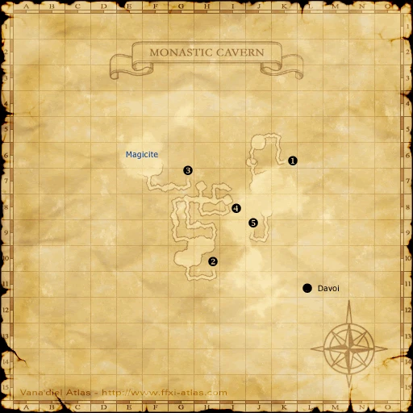
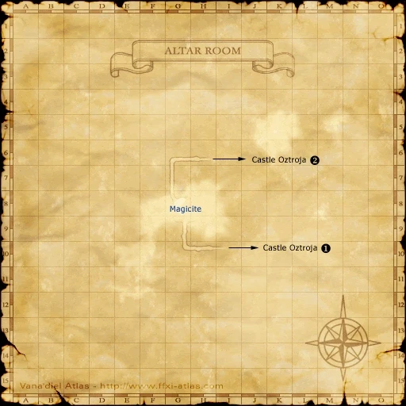

Before you begin
- Complete Sins of the Mothers and wait until the next Vana’diel day.
- Arrange present-day Magicite access: Crest of Davoi, Silver bell, Coruscant rosary and Black matinee necklace from the nation Magicite route.
Starting point
Zone-entry cutscene from West Sarutabaruta [S] · Windurst Waters [S]
People in this mission

Walkthrough
- Enter Windurst Waters [S] from West Sarutabaruta [S]. Collect the three shards at the present-day Magicites.
- Optistone: pass Davoi’s Wall of Dark Arts (G-7) into Monastic Cavern and examine the Magicite.
- Aurastone: take Beadeaux’s H-7 tunnel into Qulun Dome at I-7. Pass the sealed door using the bell, rosary and necklace, then examine the Magicite.
- Orastone: in Castle Oztroja, operate the I-8 lever and avoid the falling-floor trap. Continue through G-7’s courtyard and I-7’s northern corridor, then light the H-9 torch to pass the Brass Door into the Altar Room. Examine its Magicite.
- Speak to Velda-Galda (K-9) in Windurst Waters [S], then exit into West Sarutabaruta [S] for another scene.
- Examine the Windurstian Bulwark (J-8) for a scene. Prepare, then examine it again to start the defense.
- Defeat the successive Yagudo Parivir, Giganotaur, Kindred Incantor and Blurry Eyes waves. Romaa Mihgo and at least one Protective Ward must survive; prioritize enemies attacking them.
- After victory, examine the bulwark again before zoning. Enter Windurst Waters [S] for the reward.
Battle and progress notes
- Leaving before the post-battle bulwark scene can force a repeat.
- After failure, leave and re-enter West Sarutabaruta [S] before retrying.
Completion and reward
Cobra Staff; Moon’s Companion title.
What this opens
- Windurst route prerequisite for continuing Fate in Haze.
- Manifest Destiny, after Darkness Descends.
Area maps
Open a zone below, then select a map to enlarge it. Match the named floors and grid coordinates in the steps; these are reference area maps, not a live position tracker.
Windurst Waters (S)


West Sarutabaruta (S)

Davoi


Monastic Cavern



Beadeaux


Qulun Dome


Castle Oztroja


Altar Room



Zone guides
- Windurst Waters (S)
- West Sarutabaruta (S)
- Davoi
- Monastic Cavern
- Beadeaux
- Qulun Dome
- Castle Oztroja
- Altar Room
References
- BG Wiki — Howl from the Heavens
- FFXIclopedia — Howl from the Heavens
- Reviewed mission implementation
- Reviewed mission implementation
- Reviewed mission implementation
- Reviewed mission implementation
- Reviewed mission implementation
Steps are an original summary of the linked walkthrough and reviewed source. Other servers’ bonus rewards are not included. How to read requirements, waits and battlefield notes.